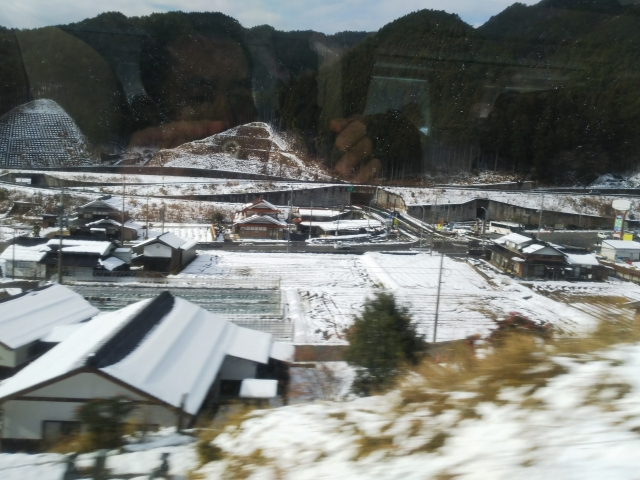
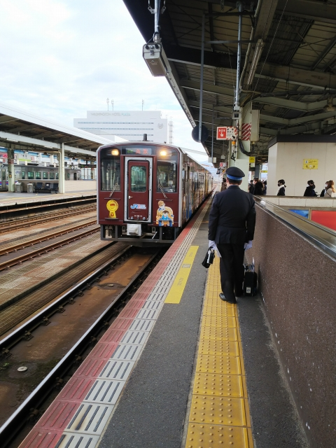
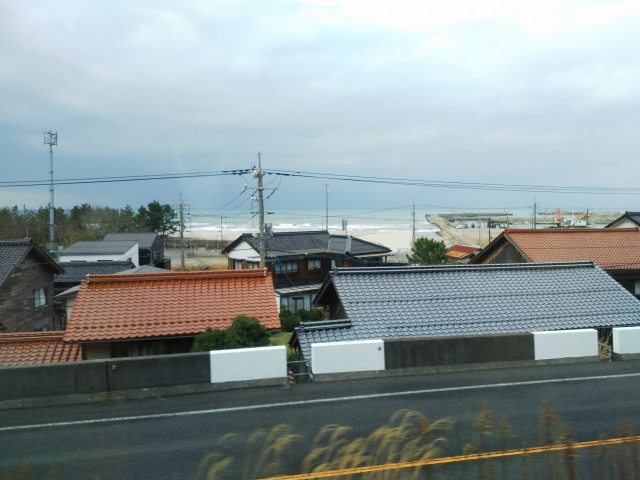

2021（R3）12月20日 関金温泉
冬の青春１８切符シーズンに突入！さて、今回は？
三ノ宮駅です。入ってきたのは新快速・・・ではな
く、スーパーはくとでは？

じゃじゃ～ん！そうです、今回は青春１８ではあり
ません！
ＪＲ西日本がこのたびのコロナ禍の対策で発売した
とくとく切符の「関西どこでも切符」です。
関西、と言いながら、西は倉敷・鳥取、南は新宮と
どこが関西やねん！というお得さです。２日間で１
万円で、昨日家族で岡山に行ったので、今日だけ見
たらめちゃ安です。

ということで、一番お得な、鳥取まで行くことにし
ました。
智頭急行に入って中国山地のあたりになると、雪が
積もってました。
鳥取に到着。先頭車は前方の見晴らしがとてもいい
です。
が、この車両もデビューから２７年。そろそろ新車、期待しますね。
ここからは、関西どこでも切符の範囲を超えるので、自腹です。
スーパーはくとはまだこの先まで走ってっますが、特急料金いるので
快速に乗換えます。

いまいちかっこ悪い車両ですが、中はクッションのいいクロスシートで
快適でした。

車窓からは冬の日本海が見えましたが、そんなに荒
れてないですね。
倉吉に到着。ここからバスに乗換えです。

駅舎も新しいですね。
昔、倉吉線のホームがあったところがバスターミナ
ルになってます。
３０分ぐらいバスに揺られて、関金温泉に到着です。
関の湯って書いてるから、ここらへんに共同浴場があるかと探したけど全
然なし！
全然見つからんからあせってきました。
通りがかりのおばちゃんに聞いたら、まだまだ奥やて。
あせりながら進んで行きます。
温泉場っぽい雰囲気になってきました。
あったあった、見つかりました！
先客もおらず、貸切状態ですね。
なかなかのいいお湯でした。
昔の写真も飾ってました。あんまり変わってないで
すね。

さて、またバスに乗って戻ります。
倉吉線の旧関金駅方面からバスがやって来ました。
バスを降りてやってきたのは・・・
奥にはＳＬが。
倉吉線鉄道記念館で～す。
旧打吹駅跡になります。倉吉の街の中心は倉吉駅で
はなく、ここ打吹でした。
なんと入場無料です。開けたら自分で電気つけます。
なぜか入れ替え用のＤＬが保存されてます。
昔の写真の展示がメインですね。
屋外展示のＣ１１です。なんと福知山線も走ってた
みたいです。
倉吉の中心部には古い街並みが残ってます。
古い街並みと来れば、寅さんですよね。
平成３年公開の第４４作「男はつらいよ 寅次郎の
告白」の舞台です。
寅さんと泉ちゃんが旅先で出会う場所です。
柵が出来てもうてる・・・
豆腐を買いに行った帰りに寅さんに出会って、あわ
ててその豆腐の入った鍋を落としてしまう泉ちゃん。
川で遊んでる子どもが拾い上げました。
ええ感じの喫茶店があったので、珍しく旅雑誌のようにくつろいでみま
した。
本日はもう一湯。鳥取温泉です。その名の通り、鳥
取の街中に温泉が湧いてます。
その中で一番レトロな雰囲気の宝温泉へ。
中のつくりは、そのまんま銭湯でした。
さて、帰りますか。特急で帰れるとはありがたい！
通常ダイヤなら、大阪からもこうのとりに乗れるん
やったのに、コロナで運休なんがめちゃ残念。
ちなみに、寅さんのラスト近くでは、鳥取駅で、寅
さんと満男・泉の別れのシーンがあります。
実はこのロケの時には、もう大阪行のディーゼル急
行無くなってたのですが、映画では大阪－鳥取のサ
ボが車両にかかってました。多分ロケ用に仕立てた
列車と思われます。
おまけです。
前日に岡山に行ったと書きましたが、詳しく言うと
高梁です。
高梁といえば、博の故郷ですよね。
昭和５８年公開の第３２作「男はつらいよ 口笛を
吹く寅次郎」より。
シキシマパンの店が、残ってますね。
公衆電話はもうなくなってます。
博の実家です。
後ろの方に伯備線の線路が見えるのですが、昭和４
６年公開の第８作「男はつらいよ 寅次郎恋歌」でも
この家の前のシーンがあって、ＳＬが力強く走るの
が映っています。